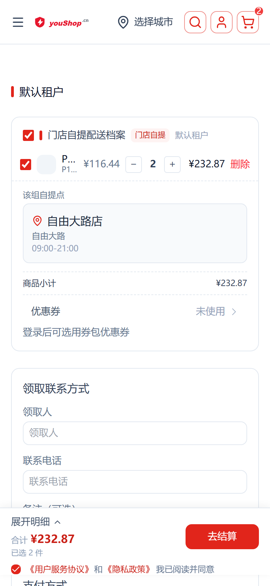
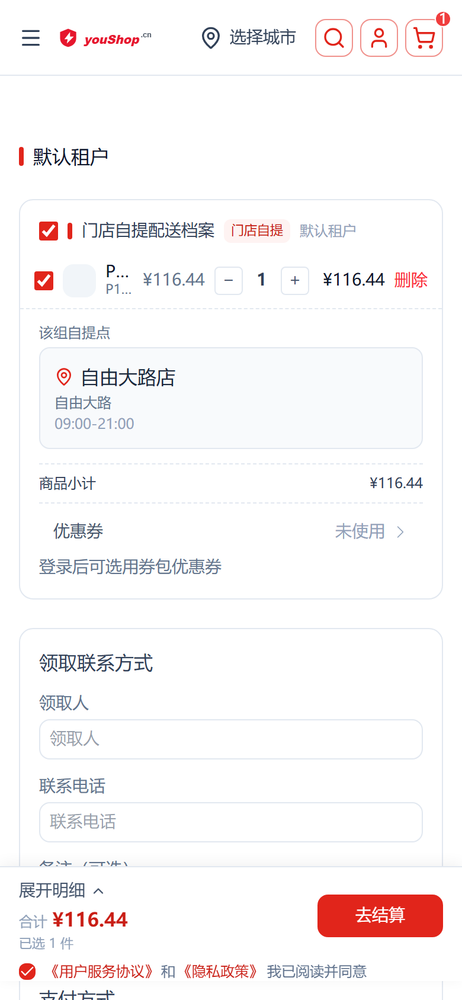
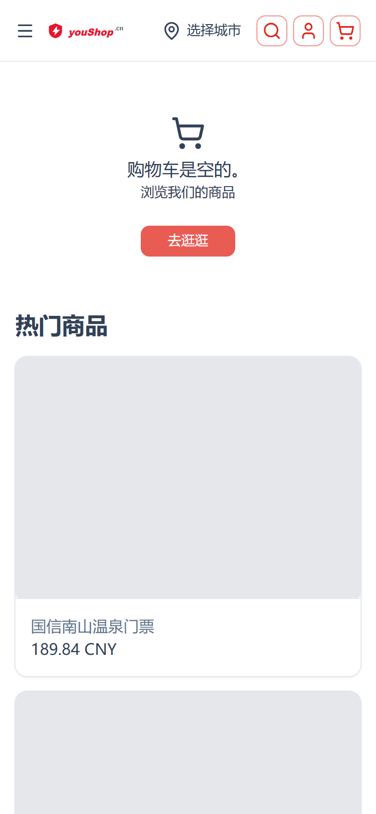
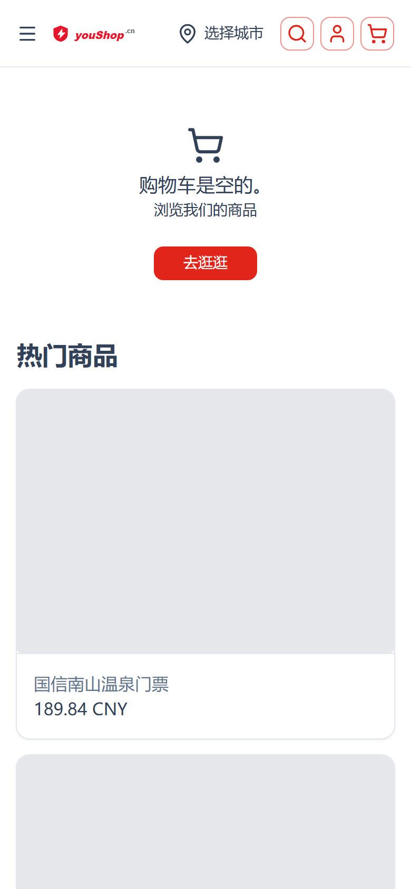
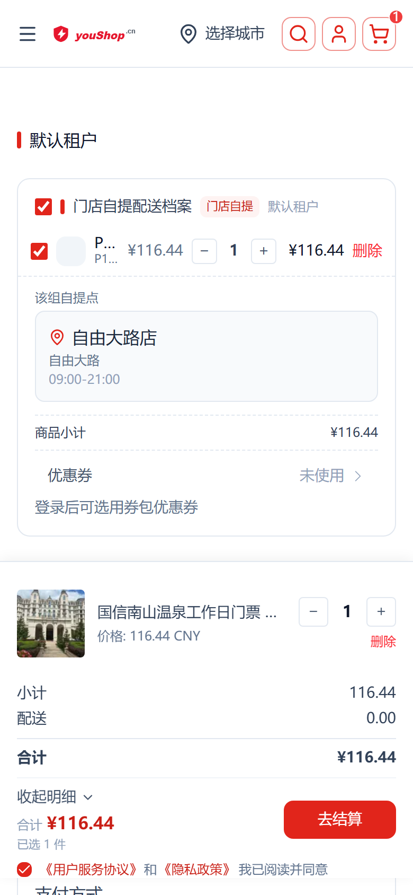

结算商品行加减 / 删除
底部导航遮挡 · 提交失败修复验收
修复三连：① 商品行「＋/− 步进」数量减到 0 时真正删除订单行（点击「删除」同样删整行）；② 结算页隐藏底部常驻导航，不再遮挡吸底结算栏「去结算」；③ 删除后结算可正常提交，不再因残留零数量行触发空选择错误。
✓ 通过减到0=删订单行
✓ 通过删除按钮删整行
✓ 通过底部导航不遮挡
✓ 通过提交不再失败
一、问题与修复概览
线上现象
- 结算页商品行数量减到 0 只把数量置 0 / 仅取消选中，订单行仍残留在活动订单中。
- 点「删除」同样只置选择状态为 0，未真正删除订单行。
- 残留的零数量行导致结算时 selectedBoxes 为空 → 触发「空选择」错误，提交失败、不生成订单。
- 商品详情 / 结算等流程页在多租户（/t2/）或多语言（/en/）前缀下底部常驻导航依然显示，遮挡吸底结算栏「去结算」按钮。
根因
- 删除不走接口：减到 0 / 删除仅改前端选中态，未调用 removeItemFromOrder 从活动订单真实移除。
- 残留行判定：结算校验按「被选箱/被选行」遍历，残留零数量行导致选择结果为空并被判定为不可结算。
- 导航显示路由前缀未归一：default.vue 用原始 route.path 判断，未剥离语言 / 租户前缀，把流程页误判为普通内容页。
修复方案
① BoxLines.vue / CartItem.vue：数量减到 0 与点「删除」统一走 removeItemFromOrder 真实删除订单行 → 重拉分箱 → 同步选中，结算不再有空选择残留。
② default.vue：剥离语言 / 租户前缀后再判断流程页，结算 / 商品详情 / 订单等页隐藏底部导航。
③ CheckoutCnSummaryBar.vue：吸底结算栏 z-index 提升至 70（高于导航 60），双重保险。
② default.vue：剥离语言 / 租户前缀后再判断流程页，结算 / 商品详情 / 订单等页隐藏底部导航。
③ CheckoutCnSummaryBar.vue：吸底结算栏 z-index 提升至 70（高于导航 60），双重保险。
二、验收方法
以下截图均来自线上环境（Web 端浏览器手机视口），匿名访客真实访问链路核验。
| 条件 | 取值 |
|---|---|
| 访问地址 | https://www.youshop.cn |
| 视口 | 390 × 844，dpr = 2（手机标准视口） |
| 测试商品 | 泉阳泉温泉门票（有货，可立即购买） |
| 交互路径 | 立即购买 → 结算页 → ± 步进 → 减到 0 / 删除按钮 → 空车态 |
| 核对对象 | 结算商品行数量、合计、已选件数、吸底「去结算」、底部导航是否出现 |
三、场景验收（手机截图）
场景 1 · 数量「＋/−」步进联动金额
结算页商品行恢复数量步进：点「＋」数量 1→2 时，合计 ¥116.44 → ¥232.87、已选件数 1→2；点「−」回到 ¥116.44 / 1 件。金额与数量实时同步，单价 × 数量 = 合计。



| 校验点 | 预期 | 实际 | 结果 |
|---|---|---|---|
| ＋ 数量与金额 | 数量 1→2，合计 ¥116.44→¥232.87 | 一致（已选 2 件） | ✓ 通过 |
| − 数量与金额 | 数量 2→1，合计 →¥116.44 | 一致（已选 1 件） | ✓ 通过 |
| 金额一致性 | 单价 × 数量 = 合计 | 116.44 × 2 = 232.87 | ✓ 通过 |
场景 2 · 减到 0 → 删除整行（不留残留）
数量一路减到 0：调用 removeItemFromOrder 从活动订单真实删除订单行，结算随之为空车态，不再残留零数量行、不再触发空选择错误。

| 校验点 | 预期 | 实际 | 结果 |
|---|---|---|---|
| 减到 0 行为 | 删除订单行 | 订单行消失，进入空车态 | ✓ 通过 |
| 无残留零数量行 | 活动订单无残留 | 结算栏清空，无空选择报错 | ✓ 通过 |
场景 3 · 「删除」按钮 → 删除整行
点击商品行「删除」按钮：同样走 removeItemFromOrder 删除整行（此处数量为 2，一次性删除该行全部 2 件），结算转为空车态。

| 校验点 | 预期 | 实际 | 结果 |
|---|---|---|---|
| 删除按钮 | 删除整行订单行 | 整行移除，空车态 | ✓ 通过 |
| 无残留 / 报错 | 无空选择错误 | 无错误提示 | ✓ 通过 |
场景 4 · 底部导航不遮挡结算栏
结算页顶部不再显示底部常驻导航（JdTabBar，元素计数 = 0），吸底结算栏「去结算」、合计、协议勾选完全可见可点，不被双底条遮挡。

| 校验点 | 预期 | 实际 | 结果 |
|---|---|---|---|
| 结算页底部导航 | 隐藏 | JdTabBar 计数 0 | ✓ 通过 |
| 吸底结算栏 | 完整可见可点 | 合计 / 去结算 / 明细 / 协议可见 | ✓ 通过 |
四、验收结论
验收通过
结算页商品行「减到 0 / 点删除」均真正删除订单行，不再残留零数量行，空选择 / 提交失败问题根除；数量 ± 步进金额实时联动；结算流程页底部导航隐藏，不再遮挡吸底「去结算」按钮。
交付记录
| 条目 | 值 |
|---|---|
| 改动文件（本次） | BoxLines.vue · CartItem.vue · default.vue · CheckoutCnSummaryBar.vue |
| 回退修正 | default.vue 补 lang="ts"；nuxt.config.ts 移除 v10 不支持的 fallbackLocale 项 |
| 部署方式 | node scripts/deploy.mjs（本地构建 → scp → pm2 restart） |
| 验证脚本 | scripts/_verify_checkout_line_prod2.py · _verify_checkout_delete_prod.py |